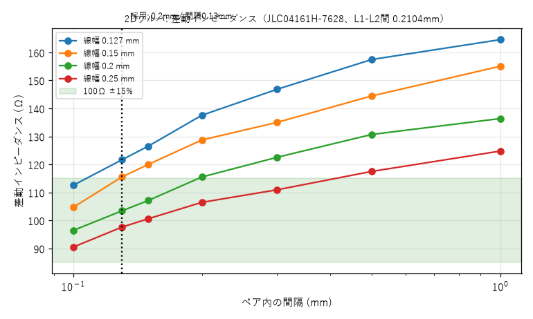
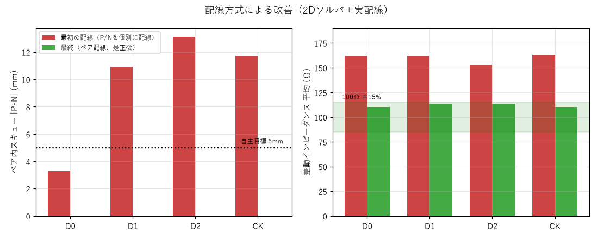
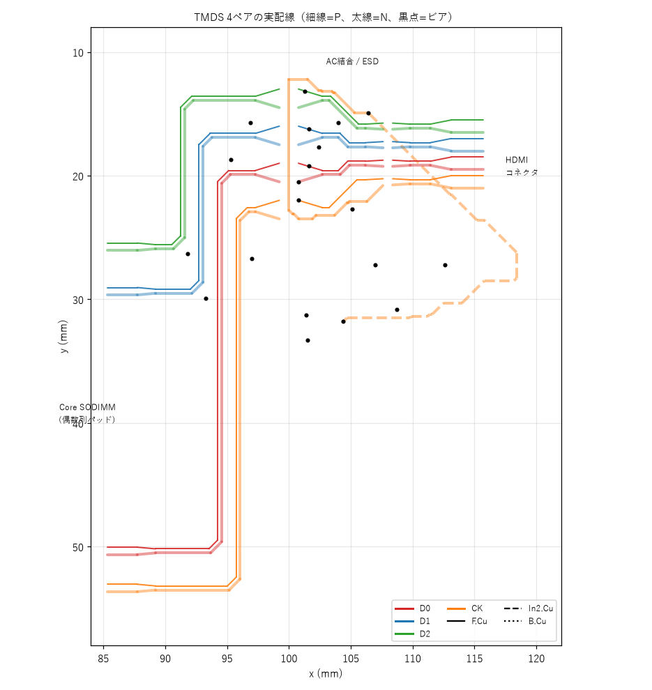
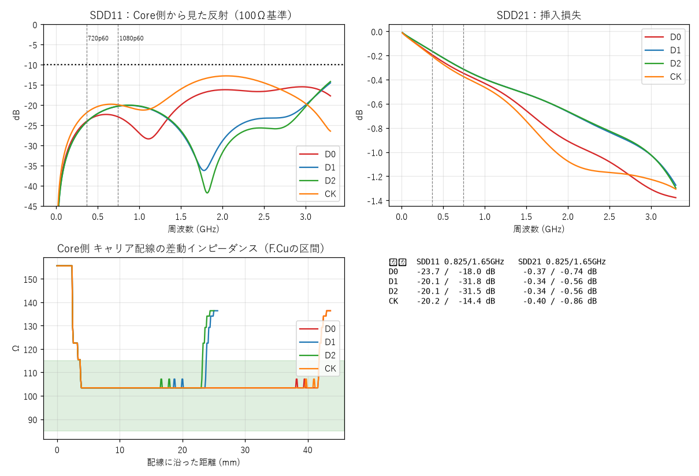
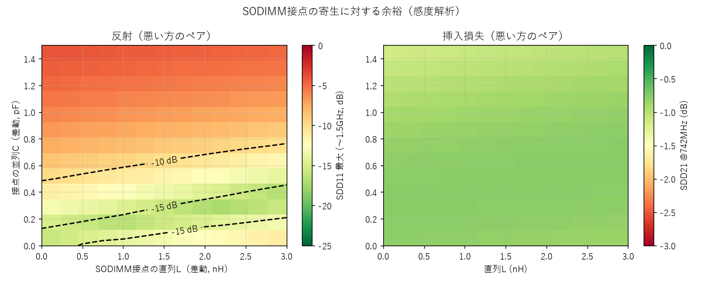

結論
設計レビューで判明した是正事項（試作前に必須）
別セッションによる独立レビュー（2026-10-24）と、その指摘の確認（データシート・実配線の再計算）の結果、次の2点は設計の欠陥であり、このページの「推定」結果の前提を損ないます。試作に進む前に是正します。
| # | 事項 | 確認した内容 | 対応 |
|---|---|---|---|
| 1 | TMDS用ESD（RCLAMP0524P）の端子導通の想定が誤り | 設計は、10ピン品の「入力（1/2/4/5）と出力（10/9/7/6）が部品内部でつながる（素通し）」と仮定して配線した。採用部品 C293965 はDOWO製（DFN2510-10L）で、データシート（Rev.G1.00）は「I/Oは1・2・4・5、GNDは3・8」と記載し、6/7/9/10の内部導通を保証していない。回路図とDRCは内部導通を前提にするため、この誤りを検出しない。 | 信号線はPCB上で連続した銅配線にし、ESDは分岐（シャント）として接続する。または内部導通が仕様で保証された部品に変更する。変更後に再配線・再解析。 |
| 2 | 499Ωバイアス抵抗の枝配線が長い | 実配線を追跡すると、枝の長さは21〜53mm（CKNは53.5mm、P側29.2mmで非対称）。これまで「直流のみで影響しない」として解析から除外していたが、差動998Ωの並列負荷だけでSDD21が約−0.43dB・SDD11が約−26dB悪化し、53mmの枝は0.8GHz付近で1/4波長に相当する。 | 抵抗を信号線の分岐点の近く（数mm以下）に置き直し、P/Nを対称にする。枝は解析に含める。 |
その他の見直し
- 対象速度は720p60（0.74Gbps/レーン）に限定。通常の1080p60（1.49Gbps/レーン）は、GW2Aの公開データシート（DS102 Table 3-17）の8:1/10:1シリアライザ上限1200Mbpsを超えるため、初版の保証条件に含めない。
- ペア内・ペア間スキューの基準を訂正。TI SLLA414A §2.3は、ペア内0.15×Tbit、ペア間0.20×Tcharacterを示す（720p60で約200ps／約2.7ns）。5mmは自主的な保守的目標で、規格値ではない。「ペア間規定なし」は誤り。
- ESD容量の仮定を訂正。差動0.15pFは根拠が弱い。DOWO資料は、I/O−GND 0.4pF（最大0.5pF）、I/O−I/O 0.2pF（最大0.3pF）。差動0.2〜0.5pFを仮定の感度範囲として使う。
- 差動インピーダンスの数値。間隔0.13mmの直接解は約103〜104Ω（以前の107Ωは0.15mmの値で代用していた）。2Dソルバと概算式の一致をもって保証誤差とは言わない。
- Coreの影響をゼロとは言わない。Core側を85〜115Ωに振ると、720p帯でSDD11は−12〜−16dB程度まで悪化する（レビューの試算）。長さ一致だけでは100Ωの証明にならない。
- 公式の基板配線データは「非公開」ではなく「未取得・公開確認できず」と表現する。
- 3D解析（openEMS）は未較正のため採用しない（7章）。
1. 評価の範囲と合否基準
信号の全経路は「FPGA → Core基板内配線 → SODIMM接点 → キャリア基板 → HDMIコネクタ →（ケーブル → シンク）」です。範囲は次のとおり決めました。
| 区間 | 扱い | 理由 |
|---|---|---|
| キャリア基板 | 実形状から解析（主対象） | 自分たちの設計物 |
| Core基板内 | 理想100Ω線路（長さ38.4mm） | 配線データは非公開。公式の配線長表のみ入手可。TX1/2/3/5は1510 mil ±5 mil、TX4だけN側が1.9mm短いため不使用 |
| SODIMM接点 | 集中定数の感度解析 | 公式に電気特性データなし（6章） |
| HDMIコネクタ | 100Ω・11mmの理想線路 | 実形状モデルなし |
| ケーブル・シンク | 対象外 | HDMIの測定はコネクタ端子で行う規定 |
公式 Tang Primer 20K Dock の回路図（HDMIの構成：100nF AC結合、499Ω、RCLAMP0524P、SRV05-4）は採用しましたが、公式の基板配線データは未取得（公開を確認できず）のため、配線品質の直接比較はできません。
合否基準
| 項目 | 基準 | 根拠 |
|---|---|---|
| 差動インピーダンス | 100Ω ±15%（85〜115Ω） | HDMI 1.4 のTMDS線路の一般的な要求 |
| ペア内スキュー | 5mm未満（約30ps）。参考：720p60のペア内0.15×Tbit≒200ps | 5mmは自主的な保守目標。TI SLLA414A §2.3：ペア内0.15×Tbit、ペア間0.20×Tcharacter |
| SDD11（反射） | −10dB以下（〜1.65GHz） | 自主目標（規格値ではない） |
| SDD21（挿入損失） | 1dB程度以内 | 自主目標 |
| 対象速度 | 720p60（0.74Gbps/レーン）。1080p60（1.49Gbps/レーン）は保証対象外 | GW2Aのシリアライザ上限1200Mbps（DS102 Table 3-17）を超える |
2. 手法とツール
| 層 | 手法 | 実装 | 状態 |
|---|---|---|---|
| (a) 解析式 | IPC-2141／Hammerstad式 | 手計算 | 検証の基準値 |
| (b) 2D準静的 | 有限差分でラプラス方程式を解き、容量行列から Z0／偶奇モード／εeff | kicad/sim/microstrip2d.py（自作） | 主力 |
| (c) チャネル推定 | 配線を0.1mm刻みの区間に分け、局所の差動インピーダンスでABCD行列をカスケード。損失は tanδ 0.02 と表皮効果 | kicad/sim/tmds_channel.py, tmds_sparam.py | 主力 |
| (d) 3D電磁界 | FDTD（openEMS 0.37.0） | kicad/sim/openems_*.py | 較正中（7章） |
スタックアップ（想定）
JLCPCB 4層 JLC04161H-7628（1.6mm）：L1 銅35µm／プリプレグ 0.2104mm（εr 4.4）／L2／コア 1.065mm／L3／プリプレグ 0.2104mm／L4。ソルダマスクは無視（差動インピーダンスを1〜3Ω下げる方向）。発注時の積層指定が一致することの確認が必要です。
モデルの前提・簡略化
- 差動モードのみ（コモン⇔差動のモード変換は評価しない）。
- F.Cuの区間だけ2Dで解く。In2.Cu・B.Cuの区間とビアは100Ωの線路として扱う（ビアの寄生は未考慮）。
- AC結合キャップは ESL 1.4nH（差動）、ESDは差動0.15pF（仮定。DOWO資料はI/O−GND 0.4〜0.5pF。是正事項）。ESDは信号線の途中に素通しで入る形でモデル化（誤り。是正事項1）。
- 499Ωバイアス抵抗の枝配線は信号経路から除外（誤り。枝が21〜53mmあり、並列負荷としても無視できない。是正事項2）。
3. 2Dソルバの検証
| ケース | 2Dソルバ | 解析式 | 参考 |
|---|---|---|---|
| 単線 w=0.35mm | 51.7Ω | IPC式 約50.0Ω | JLCPCB公表 50Ω用（0.35mm前後）と一致 |
| 単線 w=0.20mm | 66.2Ω | IPC式 67.2Ω | — |
| 差動 w=0.20／間隔0.13mm | 104Ω（直接解は約103Ω） | IPC-2141差動式 約98.7Ω | 式は概算（±10%程度）。以前の107Ωは0.15mmの値で代用していた |
単線は±3%で一致し、差動の差（5%）は式自体の精度の範囲です。差動値は約±8%の不確かさを見込んでいます。

4. 配線の結果（ペア配線の導入前後）
最初の配線は、P/Nを別々に引いていたため並走せず（結合区間5〜7%）、差動インピーダンスが約160Ω、ペア内スキューが最大13mmでした。ルータにペア配線（P/Nを1本の太い線として引いて2本に分割）を実装しました。

| ペア | P/N長 (mm) | スキュー | 結合区間 Zdiff | F.Cu上の結合割合 |
|---|---|---|---|---|
| D0（TX2） | 53.2 / 53.2 | 0.00 mm | 約104Ω | 89% |
| D1（TX3） | 35.2 / 35.2 | 0.00 mm | 約104Ω | 83% |
| D2（TX5、P/N入替） | 35.3 / 35.3 | 0.00 mm | 約104Ω | 83% |
| CK（TX1） | 53.9 / 53.9 | 0.00 mm | 約104Ω | 77% |


5. チャネル推定（Sパラメータ）— 是正前の推定
Core基板内（理想100Ω・38.4mm）、キャリア基板の実配線、AC結合キャップ、ESD、コネクタ（100Ω・11mm）をカスケードしました（差動モード、基準100Ω）。
| ペア | キャリア長 Core側/C/K (mm) | ペア内スキュー (mm) | SDD11 0.825/1.65GHz | SDD11 最大(〜3.3GHz) | SDD21 0.825/1.65GHz |
|---|---|---|---|---|---|
| D0 | 43.6 / 7.2 / 7.4 | 0.00 | -23.7 / -18.0 dB | -15.5 dB | -0.37 / -0.74 dB |
| D1 | 25.6 / 7.2 / 7.4 | 0.00 | -20.1 / -31.8 dB | -14.5 dB | -0.34 / -0.56 dB |
| D2 | 25.0 / 7.9 / 7.4 | 0.00 | -20.1 / -31.5 dB | -14.2 dB | -0.34 / -0.56 dB |
| CK | 43.6 / 7.9 / 7.4 | 0.00 | -20.2 / -14.4 dB | -12.8 dB | -0.40 / -0.86 dB |

反射は全帯域で−12.8dB以下、挿入損失は1.65GHzで−0.9dB以内でした。最悪はCKの1.65GHz付近（−14.4dB）で、Core側スタブとキャップのインダクタンスの影響です。
6. 感度解析：コネクタ接点の反射への余裕
SODIMM接点の寄生（直列L、並列C）は公式にデータが無いため、値を振って余裕を確認しました。接点を理想とした場合の最悪SDD11は−14.4dBです。

- 反射−10dBを保てる並列Cは、直列Lが0のとき約0.4pFまで、3nHのとき約0.65pFまで。
- 並列Cが約1pFを超えると、挿入損失が1.65GHzで1.5dBを超える。
- 実機のソケット接点の寄生値は確認できていない。
7. 3D電磁界解析（openEMS）の状況
実形状の評価のため、openEMS 0.37.0（公式配布のWindows版）を導入しました。専用の環境に置き、プロジェクトには含めていません。ただし較正が済んでいないため、結論には使っていません。
| ケース | openEMS | 2D／解析式 | 差 |
|---|---|---|---|
| 単線 w=0.35mm、メッシュ0.1mm | 47.7Ω | 51.7／50.0Ω | −8% |
| 単線 w=0.35mm、メッシュ0.05mm | 47.9Ω | 同上 | −8%（収束済み） |
| 差動 w=0.2／間隔0.13mm、メッシュ0.1mm | 75.3Ω | 104／98.7Ω | −22〜24% |
3Dの値は、メッシュを細かくしても変わらず、2Dと解析式のどちらとも一致しません。3D側の設定（ポート定義、境界条件、基準面、抽出式）に系統的な誤りがある可能性があります。解決の手順は、①公式チュートリアルの既知例で再現確認、②導波管ポートへの変更、③境界のPML化、④抽出方法の見直しです。
8. 限界と次の作業
| 未確認事項 | 対応 |
|---|---|
| 3D電磁界解析の較正 | 7章の手順で解決後、ビア・ESD・コネクタ接続部を評価 |
| SODIMM接点とCore基板内の実特性 | 感度解析で許容範囲を提示。試作でTDR測定 |
| ビア・内層区間（100Ω近似）、モード変換 | 3D解析で確認 |
| 積層構成が発注と一致するか | 発注時にJLC04161H-7628を指定し、層厚を確認 |
| 是正事項1・2（ESD端子導通、499Ω枝） | 試作前に是正し、再配線・再抽出・再解析 |
| 最終判断 | PoCでは短いケーブル・限定モニタでの720p60の表示確認（30分程度）。TDR・アイ測定は不調時の切り分けと次版の改善用 |
9. 再現手順と記録
- 方針・前提・判断の記録（監査用）：docs/シミュレーション方針と監査記録.md
- 調査と設計判断の経緯：docs/HDMI_信号品質_調査と方針.md
- ソース：kicad/sim/
| コマンド | 内容 |
|---|---|
kicad python tmds_channel.py --extract | 基板から配線を抽出 |
python tmds_channel.py | 区間の差動インピーダンス・長さ・スキュー |
python tmds_sparam.py | Sパラメータ推定 |
python make_report_figs.py | このページの図 |
使用環境：KiCad 10.0.6、Python 3.12（numpy 2.5.3、scipy 1.18.1、matplotlib 3.11.2）、openEMS 0.37.0（専用のPython 3.13環境）。
訂正記録
- 2026-10-24：独立レビューの指摘を反映。ESDの端子導通の想定誤り、499Ω枝の長さ、対象速度（720p60に限定）、スキュー基準の根拠、ESD容量の仮定を訂正・追記（是正事項の章）。
- 2026-10-24：結合区間の差動インピーダンスを107Ω→104Ωに訂正（2Dの解の格子に実際の間隔0.13mmを追加）。チャネル推定の区間の並びを信号経路順に修正。合否判断は変わらない。